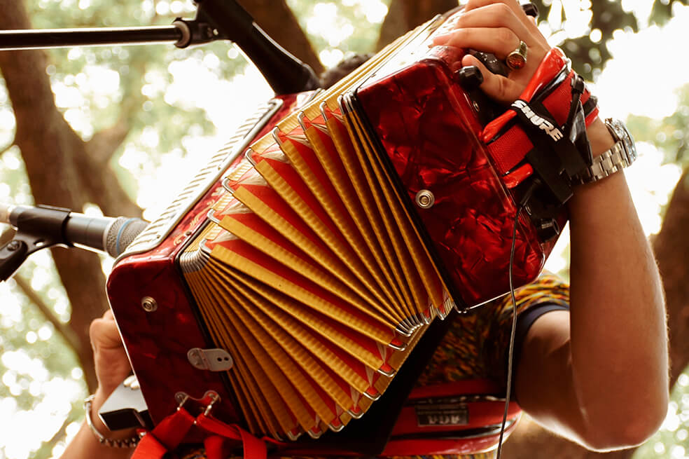
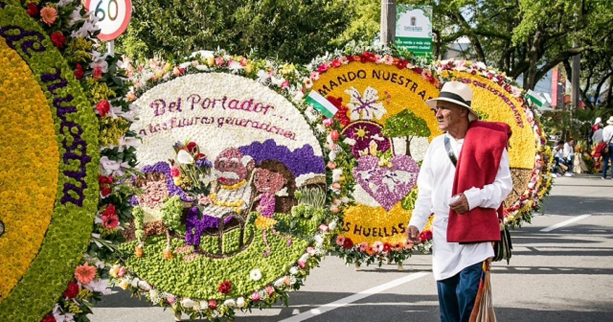

FESTIVAL DE LA LEYENDA VALLENATA
 Se celebra del 29 de abril al 2 de mayo.Desde hace más de cinco décadas Valledupar se viste de fiesta la última semana de abril. Una multitud de nacionales y extranjeros llegan por esta época y solo quieren gozar de los cuatro ritmos que se presentan en el Festival de la Leyenda Vallenata: paseo, son, puya y merengue.Junto con las presentaciones de los más grandes del vallenato, se lleva a cabo el desfile de piloneros y piloneras. Numerosas comparsas salen a la calle y van haciendo coreografías al compás de las notas de la canción El Pilón y por su lado el vallenato puro se escucha y baila durante horas en las parrandas que se realizan en casi todas las casas de las familias de Valledupar.
En el 2019, por primera vez dentro del concurso de acordeoneros de la música tradicional vallenata, incursionan las mujeres en las modalidades menor y mayor, y entre quienes se coronan a las reinas del acordeón.
La capital del Cesar queda ubicada en las estribaciones de la Sierra Nevada de Santa Marta, donde se pueden visitar museos, parques, disfrutar de balnearios, convivir con la cultura indígena Arhuaca, quienes realizan las artesanías más representativas de la región, además podrá ser testigo de cómo los niños aprenden a interpretar la música vallenata que los ha hecho famosos a nivel internacional. El Festival de la Leyenda Vallenata en toda su historia ha ido evolucionando al compás del desarrollo social y económico de Valledupar.Desde sus inicios hasta 1986 este evento era organizado por la oficina de Turismo del Departamento de El Cesar. Luego se creó la Fundación Festival de la Leyenda Vallenata, la cual funciona desde 1987 en las instalaciones de la Tarima Francisco el Hombre de la Plaza Alfonso López.
FERIA DE LAS FLORES
 Se celebra del 1 al 10 de agosto. La Feria de las Flores se ha convertido en el evento insigne de Medellín, que se celebra este año, del 2 al 11 de agosto y es la oportunidad para que la “Ciudad de la Eterna Primavera” muestre al mundo el carácter, el valor y las raíces de la cultura “paisa”.A través del color y el olor de la siempreviva, el clavel, el girasol, la orquídea y muchas más variedades, igual de bellas, son diseñadas las famosas silletas que llegan a pesar hasta 70 kilos. A la par se realizan conciertos en diferentes escenarios con artistas de renombre, el festival de la trova, y eventos para integrar a las familias antioqueñas.La Ruta del silletero es la antesala de la Feria de las Flores y se celebra en Santa Elena, con recorridos de chivas tradicionales muy coloridas y adornadas con flores de mil colores.La Feria se lleva a cabo desde 1957 y es en el corregimiento de Santa Elena donde se diseñan y arman las silletas. De allí salen el día del desfile unos 500 silleteros acompañados de comparsas y algunas carrozas para desfilar orgullosos por las calles principales de Medellín.Este mes es aprovechado también por miles de turistas, muchos de ellos extranjeros, cuyo objetivo es visitar una de las fincas a donde llegan muy curiosos a conocer todo lo que encierra el mundo floricultor y aprender la esencia del silletero, quien les cuenta acerca de las raíces de esta tradición que lleva varias generaciones y les enseña como se hace una silleta, la cual debe ser cargada por el visitante que viste el atuendo adecuado para la foto del recuerdo.